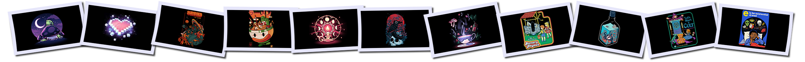

A simple repo to house my wallpapers for ease of use and automation.


Long press / right click > save link. Just don't save the thumbnail by mistake!
You can always download everything as one big zip file
If you're a Git user and you have no storage concerns, just clone the whole thing. Otherwise, here are details on more storage efficient options
I've added attribution where I can. Feel free to contact me or submit a pull request to add missing attribution.
Thanks to jonascarpay, makccr, and dharmx for excellent examples of wallpaper repos, all the artists of various kinds for their work, and you as Mega Man X!